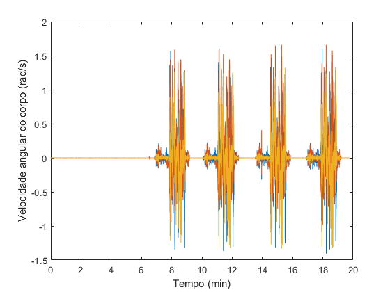
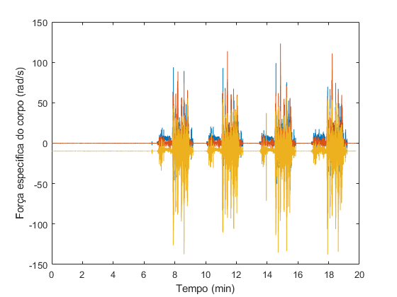

Lista 01 - Parte 1a
Autor: Francisco Castro
Contents
Preparação do ambiente
clear clc
Implementação da estrutura para o método TRIAD
triad
Coordenadas iniciais
lambda = -(23 + 05/60 + 54.04/3600)*pi/180;
delta = -(47 + 00/60 + 41.55/3600)*pi/180;
h = 774.6707; % m
Carregamento os dados
load('Montezum/dados.dat'); f = 100; % Hz (frequência de amostragem) h = 1/f; % s (intervalo de tempo entre medidas)
Tratamento dos dados
id = dados(:,1); t = id.*h; w_b = dados(:,2:4)./h; Asp_b = dados(:,5:7)./h;
Verificação dos dados
Velocidade angular do corpo
figure; plot(t/60,w_b); xlabel('Tempo (min)'); ylabel('Velocidade angular do corpo (rad/s)');
Força específica do corpo
figure; plot(t/60,Asp_b); xlabel('Tempo (min)'); ylabel('Força específica do corpo (rad/s)');
Condições iniciais
Pegando a média das medidas dos 6 primeiros minutos (id <= 36000)
g = norm(mean(Asp_b(1:36000,:))); Omega = norm(mean(w_b(1:36000,:))); w_x = mean(w_b(1:36000,1)); w_y = mean(w_b(1:36000,2)); w_z = mean(w_b(1:36000,3)); a_x = mean(Asp_b(1:36000,1)); a_y = mean(Asp_b(1:36000,2)); a_z = mean(Asp_b(1:36000,3));
Resultados para as DCMs iniciais
Base 1
D0_NED_B_base1 = double(subs(D_NED_B_1)) q0_base1 = DCMtoQuaternion(D0_NED_B_base1) euler0_base1 = quatToEuler(q0_base1)
D0_NED_B_base1 =
-0.3340 0.9458 0.0013
-0.9458 -0.3339 0.0020
-0.0048 -0.0006 1.0000
q0_base1 =
0.5771
0.0011
-0.0027
0.8195
euler0_base1 =
1.9187
-0.0049
-0.0031
Base 2
D0_NED_B_base2 = double(subs(D_NED_B_2)) q0_base2 = DCMtoQuaternion(D0_NED_B_base2) euler0_base2 = quatToEuler(q0_base2)
D0_NED_B_base2 =
-0.3339 0.9458 0.0013
-0.9458 -0.3339 0.0020
0.0023 -0.0006 1.0000
q0_base2 =
0.5771
0.0011
0.0004
0.8195
euler0_base2 =
1.9187
-0.0013
0.0020
Base 3
D0_NED_B_base3 = double(subs(D_NED_B_3)) q0_base3 = DCMtoQuaternion(D0_NED_B_base3) euler0_base3 = quatToEuler(q0_base3)
D0_NED_B_base3 =
-0.3329 0.9429 0.0013
-0.9429 -0.3329 0.0020
0.0023 -0.0006 1.0000
q0_base3 =
0.5775
0.0011
0.0004
0.8164
euler0_base3 =
1.9102
-0.0013
0.0020